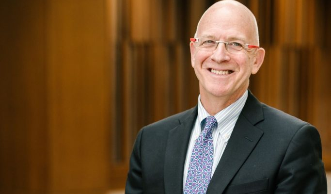

Jon Vaughn is asking the same questions.
Vaughn arrived at Michigan in 1988 as an undersized running back from Florissant, Mo., and led the Wolverines in rushing two years later. Schembechler called him "Pissant" because of his diminutive frame, but Vaughn soon proved his worth. As a redshirt sophomore, he ran for 288 yards against UCLA and became the first Michigan player to top 200 rushing yards in consecutive games before declaring for the NFL Draft and leaving Ann Arbor behind.
In three years at Michigan, Vaughn says he was abused by Anderson on 12 occasions, beginning with his initial physical. During that physical and in subsequent visits, Vaughn says Anderson fondled his genitals and inserted fingers in his rectum. Though he found Anderson's behavior unsettling, Vaughn said he didn't realize he'd been raped until reports surfaced earlier this year outlining a pattern of abuse that spanned decades.
Vaughn, 50, now wants answers about why Anderson's abuse was allowed to continue for years after the first complaints were made. He said he's spoken to many ex-players who were abused by Anderson, a large number of whom have not identified themselves publicly. In their accounts, certain patterns appear over and over again, offering clues as to how Anderson gained access to his victims and insulated himself from serious scrutiny.
Vaughn exemplifies that pattern. Growing up near St. Louis, he was exposed to violence at an early age. His mother was a steadying influence, but Vaughn had a difficult relationship with his father, a volatile man who worked for a time as a collector for the Detroit Black Mafia.
"Even when Bo had the power to get rid of him, he still didn't do it," Christian said. "That brings up other questions. Why didn't he do it? What's going on? Is there another layer to this whole thing that we don't even know about?"
When Vaughn was young, he and his brother would spend their Saturdays hanging out at a bodega owned by their father's friend. Vaughn remembers playing checkers in the back one day when a car pulled up across the street. As the driver walked toward the bodega, Vaughn watched his father give a signal. Someone called the man's name, causing him to stop in the middle of the street. A car roared into view, flicking on its lights at the last moment as it sent the man sprawling over the hood.
Though he was only in kindergarten, Vaughn watched the man dying in the street and realized he'd witnessed a murder.
"I remember my father's friend said, 'Go ahead and get the boys home and I'll handle this,'" Vaughn said. "It was never something we mentioned or talked about."
Vaughn never saw his father hit his mother, but he recalls hearing the sounds of struggle from their bedroom. Once his mother came home with a gash on her head after jumping out of a moving car to escape Vaughn's father. So when the great Bo Schembechler promised him a scholarship, an education and a ticket out of a volatile home, Vaughn eagerly accepted.
"A father figure was something I was very much looking forward to, very interested in," Vaughn said. "My dad never taught me how to catch a ball. Everything I learned sports-wise was self-taught. Excelling in sports in high school, it was all just natural talent. You didn't have that figure to drive you in a direction or a path or get the most out of you. That's what I saw in the opportunity to be coached by Bo and his coaching staff."
Vaughn didn't know it then, but his decision to attend Michigan also brought him into contact with a serial sexual predator. Like many of Anderson's victims, Vaughn assumed the invasive examinations were the price of playing for such a storied program. Even if he'd wanted to complain, who was going to listen to a 5-foot-9 freshman - a pissant in his coach's lexicon?
"Bo was a legend," Vaughn said. "Everyone that you came in contact with associated with the football program, Bo picked. You had this trust/respect thing, because Bo wouldn't have had them around if he didn't trust and respect them."
Schembechler trusted Anderson enough to retain him as the team physician despite rumors and at least one alleged conversation about the doctor's behavior. A former student broadcaster, identified in court filings as John Doe EB-17, says he approached Schembechler in 1982 to report being digitally penetrated by Anderson. Schembechler directed the student broadcaster to report the incident to athletic director Don Canham, who by that time had received a complaint from a former Michigan wrestler making similar allegations.
There's no evidence that Canham acted on the student broadcaster's complaint or that Schembechler took further action, either at the time or after he succeeded Canham as athletic director in 1988.
If either man had acted then, Vaughn and other ex-players could have been spared the painful experiences that led them to realize, 30 years later, that they were survivors of sexual abuse. So why didn't it happen?
That question has been bothering Vaughn from the time these allegations surfaced. The full answer has yet to emerge, but a deeper look at Anderson's 35-year career reveals a few clues.
The year 1968 marked the beginning of a new era at Michigan. That's the year Canham, Michigan's longtime track coach, replaced Fritz Crisler as athletic director and hired Schembechler, a 39-year-old protege of Woody Hayes, to reinvigorate the football program.
The same year, Anderson took over as director of Michigan's University Health Service. After completing medical school at Michigan in 1953, he joined a private practice in Flint and developed a sports medicine program that provided free physicals to high school athletes, according to his 2008 obituary.
A story in the Detroit Free Press recounted a conversation between Anderson and Canham that occurred Nov. 2, 1968 - nearly two months before Schembechler was hired - on the flight home from a 35-0 victory against Northwestern. Anderson proposed requiring annual physicals for all Michigan athletes, an idea Canham enthusiastically embraced.
Over the next two decades, "Doc A" would become a fixture around Schembechler's program. He earned a reputation as a friendly family doctor who would treat any ailment, no matter how minor. At the time of his death, he was lauded for his contributions by former coach Lloyd Carr and others close to the football program.
"Bo valued him greatly and had great trust and confidence in him," Bob Thornbladh, a former Michigan player and assistant coach, told MLive.com at the time of Anderson's death. "We used to tell people when we recruited them, 'You will get no finer medical care.'"
One mystery is how Anderson managed to engender such trust, even as rumors circulated about his habit of conducting unnecessary genital and anal examinations during routine appointments. Given Anderson's expertise in urology and andrology - male reproductive health - it appears he was rarely if ever questioned about the purpose of his invasive prostate exams. Many times in his career, Anderson used that expertise to present himself as an authority on matters of reproductive health, creating an image of himself as a trusted expert.
A review of the Michigan Daily archives shows Anderson was quoted numerous times discussing venereal disease, circumcision and other matters of reproductive health. In 1971, he led a discussion on sex and marriage at Michigan's Campus Chapel. A story from 1975 describes an artificial insemination program sponsored by the University Health Service that offered "$15 to any male who is willing to participate and can pass a battery of tests." According to the story, participants underwent testing to determine their sperm count and, if accepted, were instructed to return three months later to provide a donation.
"We, quite simply, are looking for good quality sperm," Anderson told the student newspaper.
That language mirrors what athletes said they were told when Anderson approached them about an unusual project: his purported sperm-count studies. Neither Vaughn nor Christian were recruited to participate in these studies, but both said they've spoken to former players who said they were asked to provide semen samples for Anderson's research. When one player asked about the purpose of these studies, Christian said, Anderson said he was studying the traits of "elite Black athletes."
"My friend said it sounded too much like the Tuskegee project," Christian said. "He said, 'Nope, not interested.'"

In one case, Christian said, an athlete asked to meet with Anderson for more information about the study. The athlete became suspicious and backed out when Anderson proposed meeting in a room at the hotel formerly known as the Campus Inn. The athlete's understanding was that Anderson and Anderson alone could collect the semen sample, Christian said.
Michael Wright, Christian's attorney, said he hasn't uncovered evidence that anyone at Michigan knew about or sanctioned Anderson's purported research, or that any research even occurred. He has, however, spoken to athletes who corroborate what Christian was told about players being recruited to participate in studies related to athletic performance.
"I think these were lies that Anderson was telling these athletes so that he could sexually assault them," Wright said. "That was told to many of the players I represent, that he was doing this type of study. I believe that was just made up by him as a scheme."
Another way Anderson leveraged his expertise was in the area of drug testing. Anabolic steroid use was rampant in college football in the 1980s, with athletes such as Oklahoma's Brian Bosworth and Michigan State's Tony Mandarich signifying the excesses of the era. Schembechler and Canham were among the influential voices pushing to clean up the game and advocating for mandatory drug testing, which the NCAA adopted in 1986.
"Every college will now test for drugs itself because it won't want to send a team to a championship and be embarrassed by having one of its stars kicked off of the team because of drugs," Canham told the New York Times in 1986.
A line in Anderson's obituary notes that he was "instrumental in developing the first drug testing program for the NCAA." His role in developing and administering drug testing at Michigan is something attorneys are trying to establish as they seek documentation from the university.
"I believe through the rest of the discovery, we will try to determine if that was in fact a reason he was being sheltered by the university," Wright said. "At this point we don't have any specific knowledge or information or evidence that would corroborate that's why the university was protecting him."
What's alleged is this: In 1979, a Michigan student identified in court filings as John Doe MC-73 went to Thomas Easthope, the school's associate vice president for student life, with specific allegations concerning Anderson. The student had been examined by Anderson through an afterhours program that provided confidential counseling and medical treatment to the gay community.
During the examination, Anderson allegedly made lewd comments about the student's genitalia while touching himself and breathing heavily. The student reported Anderson's behavior to the director of Michigan's human sexuality office and was encouraged to make a formal complaint.
Speaking to detectives in 2018, Easthope said that after learning Anderson had been "fooling around in the exam room" with male patients, he walked to Anderson's office with the intention of firing him on the spot. But John Doe MC-73's lawsuit describes a follow-up meeting in which Easthope expressed pity for Anderson, describing the doctor as "troubled, sick and needing help." Instead of firing him, the plaintiff recalls, Easthope proposed reassigning Anderson to an administrative role that didn't involve contact with patients.
As it turned out, neither of those things happened. On Jan. 14, 1980, Michigan announced Anderson was stepping down from his role as director of UHS to "return to the staff as a senior physician." The news release noted Anderson would continue as director of athletic medicine at the Health Service while serving as a physician to Michigan athletes.
"We are extremely grateful for the high quality administrative and medical leadership Dr. Anderson has provided during his years at the Health Service," vice president Henry Johnson said in the 40-year-old news release. "We are pleased that he plans to remain on the staff as a senior physician."
In a deposition conducted in late July and early August, Easthope testified that he intended to fire Anderson but believed he was overruled by two men: Henry Johnson and Don Canham. According to court filings, Easthope testified that Canham was "a bigger man than Henry Johnson and probably 90 percent of the people on the hill" and "a voice to be reckoned with at the University of Michigan."
Instead of firing Anderson, the university cut off his access to the general student population while allowing him to continue treating athletes. He would remain at the university until his retirement in 2003, a period of 24 years in which many additional athletes - including Vaughn and Christian - were abused.
"All to protect one man," Vaughn said. "The perpetrator."
The events of 1968 marked the beginning of a renaissance at Michigan. Canham built the athletic department into a marketing powerhouse that regularly drew crowds of 100,000 or more at Michigan Stadium. Schembechler took over a program with one Rose Bowl appearance in 18 years and made it a perennial contender. Along the way, they built Michigan's image as a school that does things the right way, honors the rules and wins with integrity.
Years later, former players are left to wonder about the cost of maintaining that image.
"We were supposed to be protected," Christian said. "That's what (Schembechler) told us when he came in to recruit us. But we weren't protected. Anderson was the one that was protected."
One night in July, Amos Guiora was at his home in Israel, just back from dinner with his wife, when an email arrived from across the world.
"Mr. Guiora," it began, "my name is Jon Vaughn."
Guiora didn't need any further introductions. Before he moved to Israel in 1985, Guiora spent 20 years in Ann Arbor, where his father was on the faculty of the Michigan medical school. As a kid, he hung out with Schembechler's sons and watched football practice with the coach's permission. Everywhere he went after that - from the front lines of Israeli-Palestinian peace negotiations to the halls of Congress, where he testified as an expert in counterterrorism law - Guiora wore his passion for Michigan football on his sleeve.
"I really am a huge sports fan," said Guiora, a law professor at the University of Utah who splits time between Israel and the United States. "I used to have a radio show here in Israel. I can play Michigan football trivia with you, and I'll kick your ass."
Vaughn didn't know any of that when he wrote to Guiora. The son of two Holocaust survivors, Guiora wrote a book called "The Crime of Complicity" that explored the role of bystanders in Nazi atrocities. That led him to his most recent project, a book about bystander complicity in high-profile sexual abuse scandals involving Ohio State, Michigan State, Penn State and the Catholic church.
In each of those cases, Guiora found a common theme: authority figures who were not only passive bystanders, but enablers of sexual abuse. The title of his latest book, "Armies of Enablers," refers to the way institutions often close ranks to protect a sexual predator rather than taking action to protect survivors.
Vaughn wrote to Guiora seeking answers about why authority figures at Michigan, including Schembechler and Canham, allowed Anderson to continue treating athletes despite allegations about the doctor's misconduct. In studying the details of the case, Guiora recognized the familiar pattern: a powerful doctor celebrated as an expert, victims whose complaints were dismissed or ignored, administrators who chose to protect the institution rather than exposing the crime.
Guiora can't speak definitively to the motives of Schembechler, Canham and other powerful figures at Michigan. But in studying their actions, he sees a dynamic common to sexual assault cover-ups at Ohio State, Michigan State and within the Catholic church.
"They chose to do what institutions do, and that's to protect the institutions," Guiora said. "The brand. The 'M' brand. That's enabling."
No former players have come forward to say they discussed Anderson's abuse with Schembechler. The only such assertion comes from the former student broadcaster who says he approached Schembechler in 1982 after being digitally penetrated by Anderson on two occasions while seeking treatment for migraines.
During a news conference in July, the former student broadcaster recalled Schembechler ordering him to report the matter to Canham immediately. The broadcaster said Schembechler's reaction indicated he was hearing the allegations for the first time, a belief supported by subsequent conversations with players.
"I felt from the look on his face and from his actions that this was the first time anybody had ever reported it to him," the student broadcaster said. "Further investigation by myself down the line later, talking to several of the football players who also had been assaulted by Dr. Anderson, none of them ever went to Coach Schembechler. None of them went to the assistant coaches."
"There was a pride factor there. There was just a relationship that they had with Schembechler that never allowed them to bring anything forward to him."
Those close to Schembechler have tried to put themselves in the coach's shoes. Schembechler had watched legendary Michigan broadcaster Bob Ufer battle prostate cancer before his death in 1981, an event that would have been fresh in Schembechler's mind. Perhaps, like many of his players, he assumed Anderson's invasive exams were an unpleasant medical necessity. Perhaps the idea of strong, healthy men being victims of sexual abuse simply did not compute.
"All to protect one man," Vaughn said. "The perpetrator."
One person familiar with Schembechler's thinking said that, in 1982, the coach's relationship with Canham had grown strained. Following the 1981 season, Texas A&M made a public bid to lure Schembechler away from Michigan with a massive contract offer that Schembechler didn't immediately reject. Though Schembechler ultimately stayed at Michigan, the fallout from that situation might have influenced his decision to refer the student broadcaster to Canham rather than approaching Canham directly.
The student broadcaster said he believes the responsibility for dealing with the allegations rested with one person: Don Canham. He described Canham as an all-powerful figure at the university who sparked fear in his subordinates - including broadcasters, who could be pulled from the booth at halftime if they said something Canham didn't like. As powerful as Schembechler was, Canham and Canham alone had the authority to deal with such a sensitive issue, the broadcaster said.
"Bo was powerless," the student broadcaster said. "I'll say that until my dying day, and I hope that every other football player who was there, who participated, would say the same thing."
"He was a completely powerful man, yes, because he was the disciple of Woody Hayes. But when it came to these kind of issues, there was absolutely nothing he could do except to direct the students and the student-athletes over to the boss, who was Don Canham, and let Don run with it from there."
That account stirs complicated feelings among Schembechler's former players. They, too, want to believe Schembechler took appropriate action given his understanding of the allegations. They also wonder why he didn't do more - if not in 1982, then in 1988, when he replaced Canham as athletic director.
"The one young man that went to Bo and told him what Anderson had done, Bo tells him to go to Canham," Christian said. "That wasn't the right thing to do. You take the young man to Canham yourself and say, 'Tell Canham what you just told me.' You are standing there behind him, having his back, saying, 'You tell Canham what you just told me.'"

Guiora never played for Schembechler, but as a die-hard Michigan fan, he understands the players' mixed emotions. Even after writing about similar scandals at Ohio State and Michigan State, he struggled to believe it could happen at his school. But in studying the details of Anderson's abuse, Guiora saw the unmistakable pattern playing out once again.
The Michigan brand, constructed in large part by Canham and Schembechler, held powerful sway over the people who represented it. As often happens, Guiora said, an abuser was enabled by authority figures who chose to protect the brand rather than standing up for the victims.
"Those of us who grew up in Ann Arbor, those of us whose parents were at Michigan, we really believed in the Michigan difference," Guiora said. "We always said this could never happen at Michigan. That, I think, has been a very, very sobering realization."
"If it can happen at Michigan, it can happen anywhere."